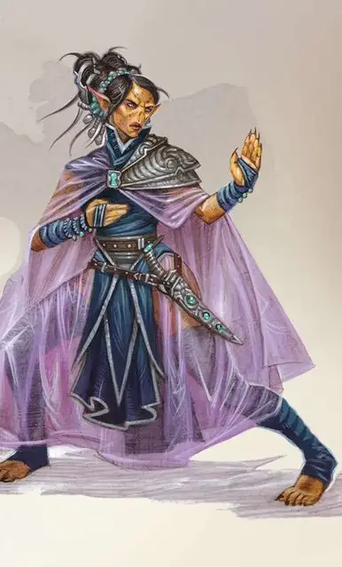

Гитцерай Анарх
Githzerai Anarch
Средний Гуманоид (Гит), законно-нейтральный

Класс Доспеха 20
Хиты 144 (17к8 + 68)
Скорость 30 футов, летая 40 футов
| мод | спас | ||
|---|---|---|---|
| СИЛ | 16 | +3 | +8 |
| ЛОВ | 21 | +5 | +10 |
| ТЕЛ | 18 | +4 | +4 |
| мод | спас | ||
|---|---|---|---|
| ИНТ | 18 | +4 | +9 |
| МДР | 20 | +5 | +10 |
| ХАР | 14 | +2 | +2 |
Навыки Восприятие +10, Магия +9, Проницательность +10
Чувства пассивное Восприятие 20
Языки Гитский
Опасность 16 (15000 опыта)
Бонус мастерства +5
Особенности
Врождённое колдовство (псионика). Базовой характеристикой анарха является Мудрость (Сл спасброска от заклинания 18, +10 к попаданию атаками заклинаниями). Он может накладывать следующие заклинания, не нуждаясь ни в каких компонентах:
• Неограниченно: волшебная рука [mage hand] (рука невидимая);
• 3/день каждое: падение пёрышком [feather fall], прыжок [jump], видение невидимого [see invisibility], щит [shield], телекинез [telekinesis];
• 1/день каждое: сфера неуязвимости [globe of invulnerability], уход в иной мир [plane shift], круг телепортации [teleportation circle], силовая стена [wall of force];
Телепатическая защита. Пока анарх не носит броню и не носит щит, к его классу доспеха добавляется модификатор Мудрости.
Действия
Мультиатака. Анарх совершает три безоружные атаки.
Безоружная атака. Рукопашная атака оружием: +10 к попаданию, досягаемость 5 футов, одна цель. Попадание: 14 (2к8 + 5) дробящего урона плюс 18 (4к8) урона психической энергией.
Легендарные действия
Анарх может совершить 3 легендарных действия, выбирая из представленных ниже вариантов. За один раз можно использовать только одно легендарное действие, и только в конце хода другого существа. Анарх восстанавливает использованные легендарные действия в начале своего хода.
Удар. Анарх делает одну безоружную атаку.
Телепортация. Анарх магически телепортируется вместе со своим снаряжением и всем, что держал в руках на расстояние вплоть до 30 футов в незанятую клетку.
Изменение гравитации (стоит 3 действия). Анарх накладывает заклинание изменение тяготения [reverse gravity]. Заклинание действует по-обычному, за тем исключением, что анарх сам выбирает направление действия гравитации и положение зоны заклинания и существа и объекты движутся по направлению к концу зоны.
Логово
В Лимбо, гитцераи анархи создают острова умиротворённости в иных бурных планах. Направив свою псионическую силу, анарх способен создать бесформенную субстанцию, делая с помощью неё горы, озёра и даже сооружения любых размеров и материалов, служащие им основой для общества гитцерай.
Действия логова
Анарх может использовать действия логова. При значении инициативы «20» (в случае ничьей проигрывает всем конкурентам), анарх совершает действие логова, чтобы вызвать один из следующих эффектов; Анарх не может использовать один и тот же эффект два раунда подряд:
• Анарх накладывает заклинание молния [lightning bolt] (5 уровня), но анарх может сменить тип урона с электрического на урон холодом, огнём, психикой, излучением, или же звуком. Если заклинание не наносит урон огнём или электрическом, оно не воспламеняет легковоспламеняющиеся объекты.
• Анарх накладывает заклинание сотворение [creation] (в качестве заклинания 9 уровня), но вместо теневого материала, он использует не сформировавшуюся субстанцию Лимбо. Применив заклинание в Лимбо, объект остаётся до того, как анарх потеряет свою концентрацию, вне зависимости от структуры. Если анарх переместится на расстояние, большее 120 футов от объекта, то потеряет концентрацию.
• Анарх может магическим образом переместить объект, который он видит в пределах 150 футов от себя, совершив с преимуществом проверку Мудрости. Сл зависит от размеров объекта: Сл 5 для Крошечного, Сл 10 для Маленького, Сл 15 для Среднего, Сл 20 для Большого и Сл 25 для Огромного размеров или больше.
Местные эффекты
Регион, содержащий логово анарха, искажён его присутствием, что создаёт один или несколько из следующих эффектов:
• В Лимбо анарх может потратить 10 минут, стабилизируя 5-мильную область, с центром на нём, в результате чего неоформленная субстанция примет любую неодушевлённую форму, которую выбирает анарх. Во время этого процесса анарх определяет форму и состав созданных форм.
• Анарх стабилизирует любой объект, созданный им в Лимбо и принесённый в Материальный план до тех пор, пока анарх находится в пределах 1 мили от объекта (не требует действия). Если анарх умирает, эти эффекты оканчиваются через 1к6 раундов. Все сформированные субстанции превращаются в хаотичную смесь энергии и материи, разваливаясь в не сформированную субстанцию, которая рассеивается спустя 1к6 раундов.
Описание
Как наиболее могущественные из гитцерай, Анархи правят общинами и поддерживают существование адамантовых цитаделей, являющихся укреплёнными пунктами гитцерай за пределами планов Лимбо. Они обладают огромными псионическими способностями и способны силой мысли манипулировать не сформированной материей их плана. Эти редчайшие гитцераи являются мудрецами и мистиками, а их слово — закон.